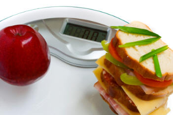

The Best Meal Planning Guide for Losing Extra Pregnancy Pounds

The simplest way for a new mom to work off those extra pregnancy pounds is by using a meal planning guide
to help monitor nutrition and track exercise.
Using a planner makes it virtually brain-free. (Which is good, because lack of sleep tends to destroy brain cells
in this phase of life.)
For those first few months, it can be incredibly difficult to manage the chaos a new baby brings into the home. Not only does using
a meal planning guide lower stress levels, it will guide healthy meal planning decisions.
Instead of grabbing that bag of chips, you see your calories for the day and choose an apple instead.
It may seem silly, but when you're utterly
exhausted, there's something comforting about a sheet of paper that says "EAT THE APPLE". Taking away even that small
effort of thought is a tremendous help towards ultimately meeting your weight goal.
The most popular meal planning guide for healthy weight loss, is Meal Plans 101.
But how much does "popular" really tell us?
Since The Essential Infant Resource
is geared towards moms and healthy meal planning is something all moms struggle with, I decided that a closer inspection of
this software would be helpful to my friends and visitors.
With all inspections, there are always areas that pass and areas that fail. I encourage you to weigh both
before deciding whether Meal Plans 101 is for you.
The Good News: Areas That Are "Outstanding"
Here are the areas where Meal Plans 101 really shines out as a useful meal planning guide towards losing weight.
You're In Good Hands
The first place you should start with any program is with the qualifications of the author(s). In this area, Meal Plans 101 scores
incredibly high. The creators really know their stuff.
Dr. Chris Mohr is the Sports Nutrition Advisor for Men's Fitness magazine. He is also a regular consultant for Discovery Health, and a
featured author for Men's Health, Weight Watchers, and Fitness (to name a few).
A simple Google search brought up countless interviews and articles
written or quoting Dr. Mohr on a variety of health topics. He is obviously well-educated and well-qualified to discuss the subjects of health and weight loss.
The second author, Jayson Hunter, is also a nutrition specialist and author. Although perhaps not as prominent as Dr. Mohr, he still managed
to pop up with several high-profile interviews and articles in a variety of magazines and blogs.
No Size Fits All: A Meal Planning Guide That Customizes
Unlike most diet books, which give you a generic food plan to follow, Meal Plans 101 customizes your plan to the foods you like and the exact calories
you specifically can eat. Here's how this software provides healthy meal planning for your body.
First, you create a user based on your current weight, and entering information so it can identify your BMR
(basal metabolic rate).
Second, the software identifies how many calories your daily meals should have based on whether you want to lose/gain/maintain.
Third, the software divides those calories into healthy ratios of carbs, protein and fat. You choose which ratios are best for you.
Are you looking for low carb meal planning? Low fat? High Protein? Meal Plans 101 complements any kind of diet - the Zone diet,
Abs, Atkins, they can all be included.
Finally, you get to the screen to develop your meal plans. Based on the information you entered, it tells you how many fruits
to choose for breakfast, carbs for lunch, etc. Using a database of over 13,000 food items (and letting you add your own), you chose what you want
to eat for each meal. Hit print and you're done!
There is also a customizable exercise portion where you can add weights or other specific exercises to your program.
As you lose weight, you will create new users to adjust your calorie guidelines. This also gives you a graph of your progress.
The Bad News: Areas that "Need Improvement"
{Photo by lepiaf.geo}
Since nothing in this beautiful green earth is perfect, it's expected that there should be a "needs improvement" mark on this meal planning guide
report card.
(I disregard so-called "reviews" that heap on nothing but praises. It makes me suspicious... Give me all the facts please,
and then I'll make my own decision.)
Wanted: a Better Demo Video
Perhaps it was just my computer, but the demonstration video seemed to have some audio problems. Towards the end, I found that my audio
finished before the video!
I suspect that's why they stuck the video demonstration link at the very bottom of their sales page. (Below
the order button.) Still, it was helpful to actually see what the software looks like (and how to use it) before purchasing.
So Sue Me...I Like Pretty Things
This software was definitely designed by a man, no slam intended. I'm just meaning to say that although it does what it says it will do, it's not very
pretty to look at. You really have to overlook style and concentrate on substance.
This isn't really a failing grade, it's more of an observation. If you decide to purchase, understand you'll buying something practical, not
necessarily something pretty.
Pay No Attention to That (Sales)Man Behind the Curtain
Like most sales pages, their home page is full of fluffy rhetoric ("Discover how to eat your way to a dream body...") Personally, I find that
shmultzy. In the weight-loss product world, salesmen are a dime a dozen. Everyone says that about their product.
So, I would ignore the "sales talk" and concentrate on the product itself. You're not purchasing a miracle pill. You're purchasing a meal planning
guide to help you track what carbs, fats, proteins, calories, etc., are entering your body. Better monitoring empowers you to make
better, more informed, decisions about the foods you eat.
Obviously the people who will benefit most from using Meal Plans 101 will be those who actually use it.
Since it's relatively easy to use,
there shouldn't be any obstacles preventing you from implementing it into your healthy meal planning.
If you are super-technical and a whiz at programming, you'll probably find it amaturish. However, if you're a regular 'ole Jane, you may
prefer its simplicity.
As with any program, you'll have to get over a learning curve in the beginning. You'll benefit from taking your time to really
grasp how to put in the information and customize the meal planning guide to your daily and weekly needs.
My recommendation?
You're the best judge of whether this is the perfect weight-loss meal planning software for you.
Over all, this meal planning guide does
what it says. If you like what it says it will do, than it's for you.